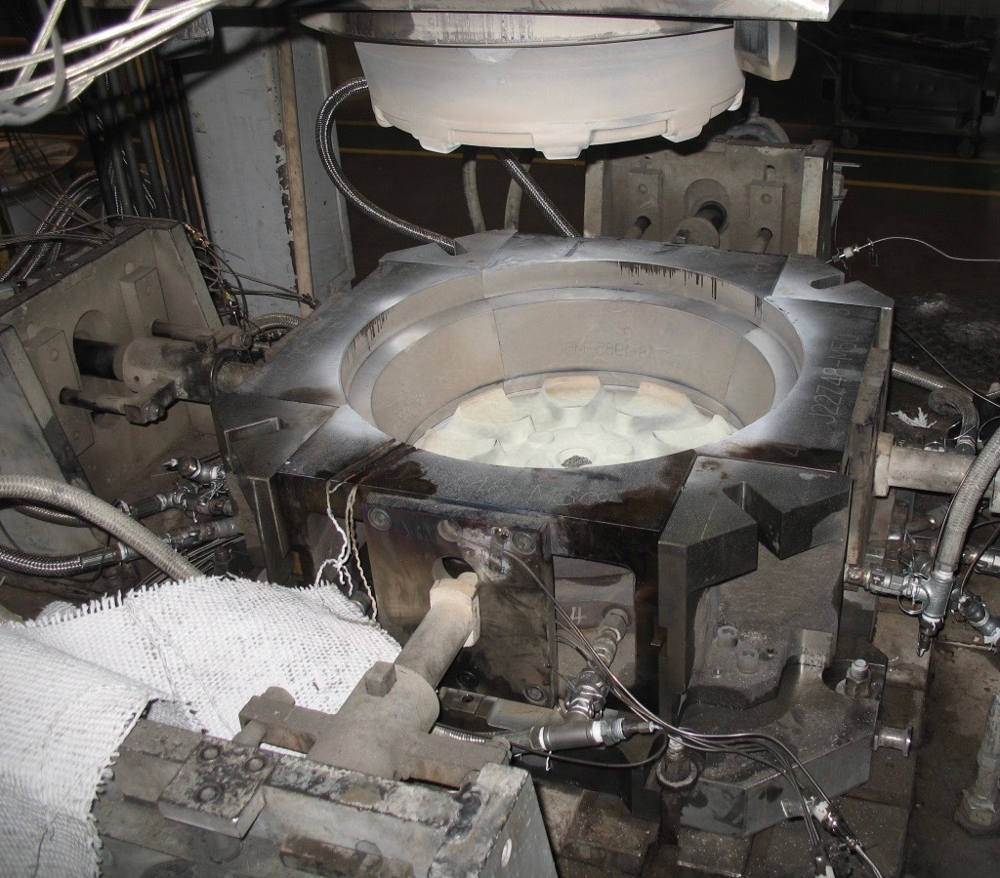

Developed coupled thermal mechanical model of low pressure die casting process of aluminum alloy wheels with finite element analysis software ABAQUS

Plant trial
Installed thermocouples in dies to measure the temperauture evolution during wheel casting process for model validation
Featured Work
3D thermal analysis
Developed 3D simulation models to investigate heat transfer in wheel casting process
Displacement measurement
Designed a testing method with displacement sensor to characterize the air gap evolution at the casting/die interface
Wheel / die design
Designed alunimum wheels and dies for rapid prototyping using AutoCAD, CATIA and UG
Thermal Mechanical Analysis
This was my first project in this class. I learned a lot about HTML and CSS.
Plant Trial
This plant trial was part of the joint research project between CITIC Dicastal and the University of British Columbia (UBC). To facilitate the cooperation, I took the overseas assignment and was sent to Canada to work with the UBC team to plan for the trial. At the same time I stayed in touch with the company's manufacturing engineers in China to organize and get everything ready for the trial.
Due to confidentiality reasons, sensitive informations in the images are masked and only the general information about the trial is shared here.
Overview
To provide data to develop and tune the boundary conditions of the simulation model and to validate the model from the perspective of temperature history, thermocouples were inserted at a number of locations within a production die and cast into wheels. Data from the thermocouples was logged over a number of cycles including under steady-state cyclic conditions in order to measure and record the temperature history at discrete locations within the die and wheel.
Benefit of Plant Trial
Quantitative data for model validation and assessmenet of current model accuracy
Temperature in both die and casting
Quantify boundary conditions, e.g. cooling water temperatures, environmental temperatures
Assess repeatability of casting equipment
Access cycle to cycle temperature field stability of die structure
Pressure curve repeatability
Understand casting process
Understand how long it takes to reach steady state condition
Experimental Procedures
Stainless steel sheathed, Type-K thermocouples (1/8th inch) were inserted into holes machined in the die sections (top, side, bottom dies) and into pressure-lock fittings at 50 locations in a wheel production die. Thermocouples placed close to the casting/die interface were welded into the face of the die at approximately 2 mm below the surface. Data from the 50 thermocouples together with another 22 thermocouples for inlet/outlet of cooling channels and the signals from cooling channel solenoids, die actuations and pressure sensors were recorded for 28 casting cycles using a National Instruments cDAQ system and LabView software at 5 Hz. After 25 cycles, nominal steady state operation was achieved, which was determined based on when the die temperatures at the end of each casting cycle were nearly identical to their values at the start of the cycle.
In addition to measuring the temperature of the die, three 1/16th inch thermocouples were cast into the wheels produced during the last 7 casting cycles to record the cooling curves at discrete locations within the wheel. The thermocouples that were to be cast-in were placed into the die cavity when top and side dies were open. When the casting cycle started, the top and side dies close, trapping the thermocouples within the die cavity. Before the die opened in each of these cycles, the thermocouples were severed to allow the wheel to be ejected and to carry on down the production line. The final locations of these cast-in thermocouples were determined by transmission X-ray imaging after casting.
To improve the data pocessing efficiency, I also developed Python scripts to process the large file produced by the DAQ system in the trial. The scripts were able to add header, split file into small files for each cycle, determine filling time for each cycle, and calculate the average and standard deviation of filling time among cycles, etc.
The example figures below show the plant trial process and some of the results.
Thermocouples installed in top dieThermocouples installed in bottom dieInstrumented die with thermocouplesCasting processThermocouples casted in the wheelNational Instrument cDAQ and LabVIEW Data Logging SystemComparison of thermocouple data and ProCast model data at top dieComparison of thermocouple data and ProCast model data at side die
3D Thermal Analysis
This was my first project in this class. I learned a lot about HTML and CSS.
Displacement Measurement
This technique was developed during my master's study. The objective was to characterize the air gap evolution at the casting/die interface during the aluminum alloy wheel casting process, and the collected data would be used to validate the coupled thermal-mechanical simulation model.
The device selected was the Kaman High Temperautre Displacement Sensor. The sensor is based on inductive eddy current technology, which can provide accurate non-contacting measurement of conductive surface motion in hostile environments.
The KD–1950 Displacement Sensor was selected because: firstly, with an operating temperature range from -196 °C to +537 °C (can reach up to 648 °C for short term), the sensor can withstand the high temperature casting environment (~500 °C in the die); secondly, its measurement range and resolution (0-3.81 mm and ± 0.0013 mm, respectively) satisfies the air gap size at wheel/die interface (0-1 mm, estimated from preliminary modeling results) and the accuracy requirement of the experiment (± 0.05 mm).
The figure at the top shows the experiemental set-up that allowed installation of the displacement sensor in the side die of an operational wheel casting process. As seen in the figure, a through hole was bored in the side die, and the KD-1950 displacement sensor was installed near the hot face of the side die behind a quartz disc. Two steel pieces were then used to position the sensor and hold it in the side die. The 2 mm thick quartz disc (extremely low thermal conductivity) was then placed between the sensor head and the liquid metal to protect the sensor during casting.
The sensor installation was designed so that sensor would move with the side die to detect the displacement of the corresponding wheel surface. The variation of air gap at the wheel/die interface for each casting cycle could thusly be measured. The collected displacement data would then be compared with the model predictions. In this way, one of the mechanical aspects of the thermo-mechanical model could be validated.
A simple test was performed to check whether the sensor could actually detect the displacement of an A356 sample with a quartz disc in between the sensor and the sample, and to assess the accuracy of the fitting equation derived from calibration data. The displacement sensor was installed in a steel tube with a quartz disc as shown in the Figure above. The tube was fixed to the lab bench. A square piece of A356 was machined from the mid-height of a wheel rim and used as the target sample in the test. The target sample was fixed to an aluminum gauge block with a C-clamp and placed on a horizontal steel plate to ensure that the target surface of the sample was parallel to the face of the sensor. The target sample was placed at known distances from the sensor by inserting shim stocks or gauge blocks of different thicknesses in between the quartz disc and the target sample. The thickness of the shim stock and gauge block was measured with a micrometer. The voltage output from the sensor was recorded and converted to displacement.
This testing proved that KD-1950 displacement sensor could detect the displacement of a room temperature A356 target with a quartz disc in between. At the time of my graduation, the sensor was being used on a sand casting to test its performance at high temperature. These tests would further verify its capabilities to measure the wheel/die air gap evolution in the relevant temperature range.
Wheel / Die Design
This is a 16-inch 4-double-spoke aluminum alloy wheel that I designed for BYD electric cars when I was working at CITIC Dicastal.
The front face design mockup was provided by the customer, and I turned it into a 3D design. The design was iterated several times until its mechanical reliability simulated by FEA was satisfactory. Then, the wheel was prototypted and tested to ensure it met all the product specifications. Key specifications include material properties (hardness, elongation,etc), mechanical performance (airtightness, fatigue performance, impact strength, etc), dimension and weight, etc. If the prototype failed to meet one of the specifications, the design would need to be modified, protopyted and tested again. The design was iterated several times until all the product specifications were met.
Besides wheels, I also designed several dies for low pressure die casting. The cooling technology used in the dies were water cooling and air cooling. Due to confidentiality reasons, the die designs are not shared here.
CATIA and UG were used for 3D designs, and AutoCAD was used to produce 2D engineering drawings.